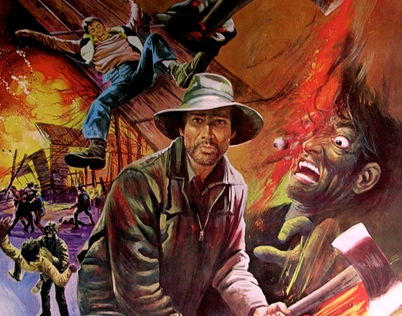
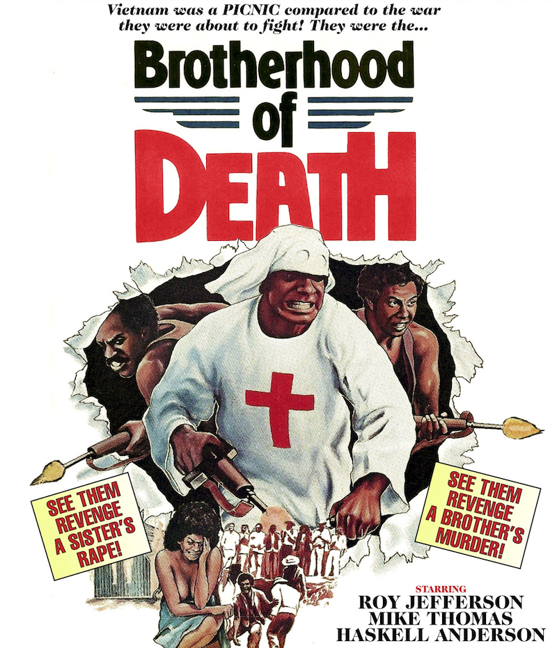
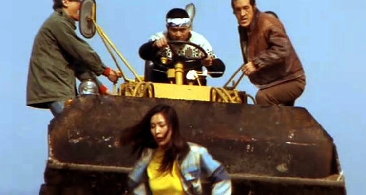

田舎ホラー大全科第二集 ～これが田舎のオ･モ･テ･ナ･シ～ オールナイト
わたしは田舎をおそれる、
くらい家屋の中に住むまづしい人間のむれをおそれる。
冬枯れのさびしい自然が私の生活をくるしくする。
田舎の空氣は陰鬱で重くるしい、
田舎の手觸りはざらざらして氣もちがわるい、
わたしは田舎をおそれる、
田舎は熱病の靑じろい夢である。
萩原朔太郎 詩集「月に吠える」より
暴れん坊村長Trapped

1982年/カナダ/98min
監督：ウィリアム･フリュエ
出演：ヘンリー･シルヴァ、ニコラス･キャンベル
ある山奥の村を調査に訪れた大学生グループ。そこは暴れん坊な村長が支配する恐怖の気狂い村だった。
クロンボ遊撃隊 vs KKK団Brotherhood Of Death

1976年/アメリカ/85min
監督･脚本：ビル･ベリー
出演：ロイ･ジェファーソン、ル･タリ、ハスケル･アンダーソン三世、ブライアン･クラーク
アラバマを舞台に黒人と白人の凄絶な闘いが描かれる。夜な夜な黒人へのリンチ活動に励むクー・クラックス・クランの連中（警官さえもメンバー）を、ベトナム帰りのブラザーたちがブチ殺す。今年最もタイムリーな作品。
ソニーボーイSONNY BOY
1989年/アメリカ/96min
監督：ロバート･マーティン･キャロル
音楽：カルロ･マリア･コルディオ
出演：デヴィッド･キャラダイン、ブラッド･ドゥーリフ
田舎の一家に幼いころ誘拐され舌を切り取られた主人公は、奴隷生活から脱出しようとする。デヴィッド・キャラダインの女装、豚男、野生児などどこをとっても田舎ホラーな世界。80年代の隠れた傑作映画。
昼下りの女 挑発！！

1979年/日本/69min
監督：斉藤信幸
脚本：桂千穂
出演：八城夏子、深沢ゆみ、飛鳥裕子
田舎へドライブに行った主人公がひたすら田舎者に襲われるというまさに和製田舎ホラー。「史上最強の変態映画」と脚本家･桂千穂が豪語するロマンポルノの自信作。
悪魔のいけにえ2 The Texas Chainsaw Massacre 2
The Texas Chainsaw Massacre 2

1986年/アメリカ/101min
監督･脚本･音楽：トビー･フーパー
脚本：L･M･キット･カーソン
出演：デニス･ホッパー、キャロライン･ウィリアムズ、ジム･シードウ、ビル･モーズリイ
前作から13年後。あの一家は未だにテキサスで活動していた！ 気狂い保安官vs気狂い一家の気狂い対決は気狂い爆音上映でこそ必見！！